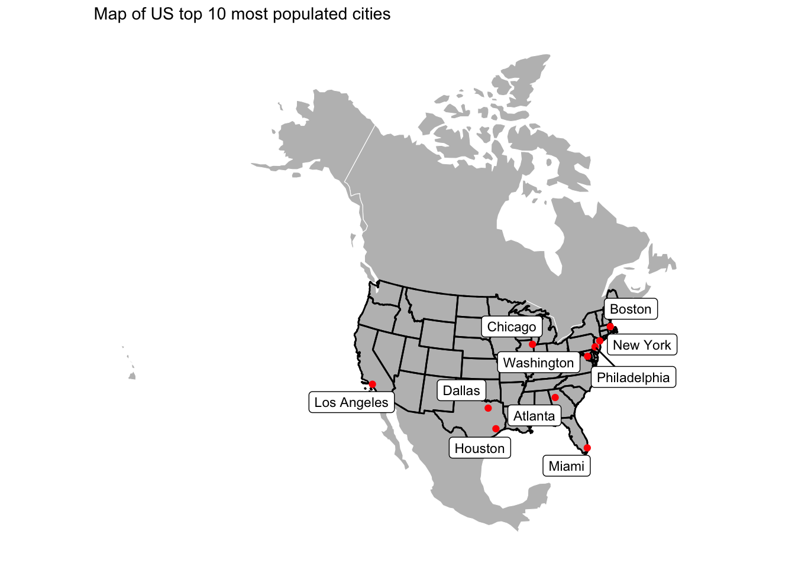

# spatial data science
library(tidyverse)
library(sf)
library(units)
# Data
library(USA.state.boundaries)
library(rnaturalearth)
# Visualization
library(gghighlight)
library(ggrepel)
library(knitr)
library(flextable)
library(leaflet)
library(ggthemes)
# Other
library(readr)Lab02: Distances and the Border Zone
Ecosystem Science and Sustanability 523c
Load in the libraries
Question 1
1.1 Define a projection
Use North America Equidistant Conic
eqdc <- '+proj=eqdc +lat_0=40 +lon_0=-96 +lat_1=20 +lat_2=60 +x_0=0 +y_0=0 +datum=NAD83 +units=m +no_defs'1.2 Get USA state boudaries
remotes::install_github("ropensci/USAboundaries")Using GitHub PAT from the git credential store.Skipping install of 'USAboundaries' from a github remote, the SHA1 (0f56f492) has not changed since last install.
Use `force = TRUE` to force installationremotes::install_github("ropensci/USAboundariesData")Using GitHub PAT from the git credential store.Skipping install of 'USAboundariesData' from a github remote, the SHA1 (064cdbcb) has not changed since last install.
Use `force = TRUE` to force installation# Once installed
USA_states_raw <- USAboundaries::us_states(resolution = "low")1.3 Get country boundaries for Mexico, the US and Canada
remotes::install_github("ropenscilabs/rnaturalearthdata")Using GitHub PAT from the git credential store.Skipping install of 'rnaturalearthdata' from a github remote, the SHA1 (ff4d891f) has not changed since last install.
Use `force = TRUE` to force installationcountries <- rnaturalearth::countries110 %>%
st_as_sf() %>%
filter(countries110$ADMIN %in% c("United States of America", "Canada", "Mexico")) %>%
st_transform(crs = eqdc)1.4 Get city locations from the csv file
city_locations <- read_csv("Lab2/simplemaps_uscities_basicv1/uscities.csv")Rows: 31254 Columns: 17
── Column specification ────────────────────────────────────────────────────────
Delimiter: ","
chr (9): city, city_ascii, state_id, state_name, county_fips, county_name, s...
dbl (6): lat, lng, population, density, ranking, id
lgl (2): military, incorporated
ℹ Use `spec()` to retrieve the full column specification for this data.
ℹ Specify the column types or set `show_col_types = FALSE` to quiet this message.city_locations_clean <- city_locations %>%
filter(!state_id %in% c("AK", "HI", "PR"))
# Convert to spatial
city_location_sp <- st_as_sf(city_locations_clean,
coords = c("lng", "lat"),
crs = 4326) %>%
select(city, population, state_name) %>%
st_transform(crs = eqdc)
#st_filter(city_location_sp,
# filter(city_location_sp, city == "Fort Collins"),
# .predicate = st_is_within_distance, 1000)Question 2
2.1 Distance to USA border (coastline or national) (km)
# Convert USA state boundaries to a MULTILINESTRING
USA_border <- USA_states_raw %>%
filter(!state_abbr %in% c("AK", "HI", "PR")) %>%
st_union() %>%
st_cast("MULTILINESTRING") %>%
st_transform(crs = eqdc)
# CREATE DISTANCE COLUMN
city_location_sp$dist_us_border_km <- st_distance(city_location_sp, USA_border) %>%
set_units("km") %>%
drop_units()
# Create flextable
top5_us_border <- city_location_sp %>%
slice_max(order_by = dist_us_border_km, n = 5) %>%
select(city, state_name, dist_us_border_km) %>%
flextable() %>%
set_caption("Top 5 US cities with the greatest distance to the US border")
top5_us_bordercity | state_name | dist_us_border_km | geometry |
|---|---|---|---|
Ludell | Kansas | 1,012.508 | [[XY]] |
Dresden | Kansas | 1,012.398 | [[XY]] |
Herndon | Kansas | 1,007.763 | [[XY]] |
Hill City | Kansas | 1,005.140 | [[XY]] |
Atwood | Kansas | 1,004.734 | [[XY]] |
2.2 Distance to state borders
# Create US state borders
state_borders <- USA_states_raw %>%
filter(!state_abbr %in% c("AK", "HI", "PR")) %>%
st_combine() %>%
st_cast("MULTILINESTRING") %>%
st_transform(crs = eqdc)
# Calculate the distances to state border
city_location_sp$dist_state_border_km <- st_distance(city_location_sp, state_borders) %>%
set_units("km") %>%
drop_units()
# Create table
top5_state_border <- city_location_sp %>%
slice_max(order_by = dist_state_border_km, n = 5) %>%
select(city, state_name, dist_state_border_km) %>%
flextable() %>%
set_caption("Top 5 US cities with the greatest distance to the state border")
top5_state_bordercity | state_name | dist_state_border_km | geometry |
|---|---|---|---|
Briggs | Texas | 309.4150 | [[XY]] |
Lampasas | Texas | 308.9216 | [[XY]] |
Kempner | Texas | 302.5868 | [[XY]] |
Bertram | Texas | 302.5776 | [[XY]] |
Harker Heights | Texas | 298.8138 | [[XY]] |
2.3 Distance to Mexico
mexico <- countries %>%
filter(ADMIN == "Mexico") %>%
st_union() %>%
st_cast("MULTILINESTRING") %>%
st_transform(crs = eqdc)
city_location_sp$dist_mexico_km <- st_distance(city_location_sp, mexico) %>%
set_units("km") %>%
drop_units()
top5_mexico <- city_location_sp %>%
slice_max(order_by = dist_mexico_km, n = 5) %>%
select(city, state_name, dist_mexico_km) %>%
flextable() %>%
set_caption("Top 5 US cities longest distance to Mexico border")
top5_mexicocity | state_name | dist_mexico_km | geometry |
|---|---|---|---|
Grand Isle | Maine | 3,282.825 | [[XY]] |
Caribou | Maine | 3,250.330 | [[XY]] |
Presque Isle | Maine | 3,234.570 | [[XY]] |
Oakfield | Maine | 3,175.577 | [[XY]] |
Island Falls | Maine | 3,162.285 | [[XY]] |
2.4 Distance to Canada (km)
canada <- countries %>%
filter(ADMIN == "Canada") %>%
st_union() %>%
st_cast("MULTILINESTRING") %>%
st_transform(crs = eqdc)
city_location_sp$dist_canada_km <- st_distance(city_location_sp, canada) %>%
set_units("km") %>%
drop_units()
top5_canada <- city_location_sp %>%
slice_max(order_by = dist_canada_km, n = 5) %>%
select(city, state_name, dist_canada_km) %>%
flextable() %>%
set_caption("Top 5 US cities with the longest distance to the Canadian border")
top5_canadacity | state_name | dist_canada_km | geometry |
|---|---|---|---|
Guadalupe Guerra | Texas | 2,206.455 | [[XY]] |
Sandoval | Texas | 2,205.641 | [[XY]] |
Fronton | Texas | 2,204.794 | [[XY]] |
Fronton Ranchettes | Texas | 2,202.118 | [[XY]] |
Evergreen | Texas | 2,202.020 | [[XY]] |
Question 3
Visualization of distance data ### 3.1 Data
# Show the 3 continents, CONUS outline, state boundaries, and 10 largest USA cities (population) on a single map
top10_cities <- city_location_sp %>%
arrange(desc(population)) %>%
slice(1:10)
# Plot
ggplot()+
geom_sf(data = countries, fill = "grey", color = "white", lty = "solid", size = 0.3)+
geom_sf(data = USA_border, fill = NA, color = "black", lty = "dashed", size = 0.3)+
geom_sf(data = state_borders, fill = NA, color = "black", lty = "solid", size = 0.05)+
geom_sf(data = top10_cities, color = "red")+
ggrepel::geom_label_repel(data = top10_cities, aes(label = city, geometry = geometry),
stat = "sf_coordinates",
size = 3)+
theme_map()+
labs(title = "Map of US top 10 most populated cities")
3.2 City Distance from the border
top5_city_distance <- city_location_sp %>%
arrange(desc(dist_us_border_km)) %>%
slice(1:5) %>%
mutate(city_label = paste0(city, ",", state_name))
ggplot()+
geom_sf(data = city_location_sp, aes(color = dist_us_border_km))+
scale_color_viridis_c(option = "plasma")+
labs(color = "Distance to US Border (km)")+
ggrepel::geom_label_repel(data = top5_city_distance, aes(label = city_label, geometry = geometry),
stat = "sf_coordinates",
size = 3)+
theme_map()+
labs(title = "Cities in the US and the distance to the U.S. Border")3.3 City Distance from Nearest state
top5_city_distance_state <- city_location_sp %>%
arrange(desc(dist_state_border_km)) %>%
slice(1:5) %>%
mutate(city_label = paste0(city, ",", state_name))
ggplot()+
geom_sf(data = city_location_sp, aes(color = dist_state_border_km))+
scale_color_viridis_c(option = "plasma")+
labs(color = "Distance to State Border (km)")+
ggrepel::geom_label_repel(data = top5_city_distance_state, aes(label = city_label, geometry = geometry),
stat = "sf_coordinates",
size = 3)+
theme_map()+
labs(title = "City Distance to State Boundary")3.4 Equidistance boundary from Mexico and Canada
city_location_sp <- city_location_sp %>%
mutate(absolute_distance = abs(dist_mexico_km - dist_canada_km))
equal_distance_cities <- city_location_sp %>%
filter(absolute_distance <= 100)Warning: Using one column matrices in `filter()` was deprecated in dplyr 1.1.0.
ℹ Please use one dimensional logical vectors instead.top5_pop_cities_near_border <- equal_distance_cities %>%
arrange(desc(population)) %>%
slice_head(n =5)
ggplot()+
geom_sf(data = city_location_sp, aes(color = absolute_distance))+
gghighlight(absolute_distance <= 100, use_direct_label = FALSE)+
ggrepel::geom_label_repel(data = top5_pop_cities_near_border,
aes(label = paste0(city, "," , state_name), geometry = geometry),
stat = "sf_coordinates",
size = 3)+
scale_color_viridis_c(option = "inferno", name = "Distance Difference (km)")+
theme_map()+
labs(title = "Most Populous City in Each State Farthest Away from the U.S. Border")
Question 4
Real World Application
4.1 Quantifing Border Zone
# Filter for cities in 100 mi or 160 km of border
border_zone_cities <- city_location_sp %>%
filter(dist_us_border_km <= 160)
border_zone_populations <- border_zone_cities %>%
summarize(total_population = sum(population, na.rm = TRUE))
total_US_pop <- sum(city_location_sp$population)
percentage_pop <- border_zone_populations$total_population / total_US_pop * 100
summary_table <- data.frame(
"Number of Cities in 100 Miles Zone" = nrow(border_zone_cities),
"Total Population in Border Zone" = border_zone_populations$total_population,
"Percentage of Total U.S. Population" = percentage_pop
)
summary_table Number.of.Cities.in.100.Miles.Zone Total.Population.in.Border.Zone
1 13160 256086824
Percentage.of.Total.U.S..Population
1 64.63109flextable(summary_table, )Number.of.Cities.in.100.Miles.Zone | Total.Population.in.Border.Zone | Percentage.of.Total.U.S..Population |
|---|---|---|
13,160 | 256,086,824 | 64.63109 |
4.2 Mapping Border Zone
top10_border_zone <- border_zone_cities %>%
arrange(desc(population)) %>%
slice_head(n = 10)
ggplot()+
geom_sf(data = city_location_sp, aes(color = dist_us_border_km))+
gghighlight(dist_us_border_km <= 160, use_direct_label = FALSE)+
scale_color_gradient(low = "orange", high = "darkred")+
ggrepel::geom_label_repel(data = top10_border_zone,
aes(label = paste0(city, ",", state_name), geometry = geometry),
stat = "sf_coordinates",
size = 3)+
theme_map()+
labs(title = "10 most Populous Cities in U.S. within 100 Miles of the U.S. Border")4.3 Instead of labeling the 10 most populous cities label the most populous cities in each state within the Danger Zone.
most_pop_cities_state <- border_zone_cities %>%
filter(dist_us_border_km <= 160) %>%
group_by(state_name) %>%
slice_max(population, n =1) %>%
ungroup()
ggplot()+
geom_sf(data = city_location_sp, aes(color = dist_us_border_km))+
gghighlight(dist_us_border_km <= 160, use_direct_label = FALSE)+
scale_color_gradient(low = "orange", high = "darkred")+
ggrepel::geom_label_repel(data = most_pop_cities_state,
aes(label = paste0(city, ",", state_name), geometry = geometry),
stat = "sf_coordinates",
size = 3,
max.overlaps = 30)+
theme_map()+
labs(title = "Most Populous City in Each State within 100 Miles of the U.S. Border")